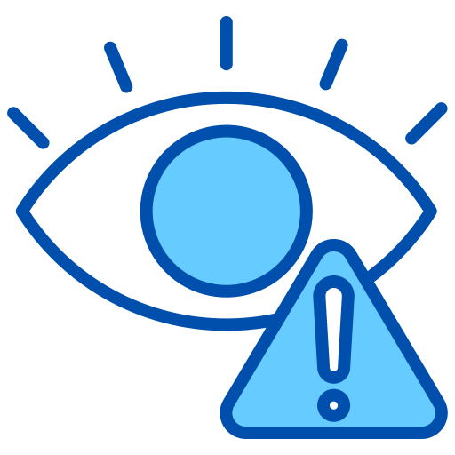
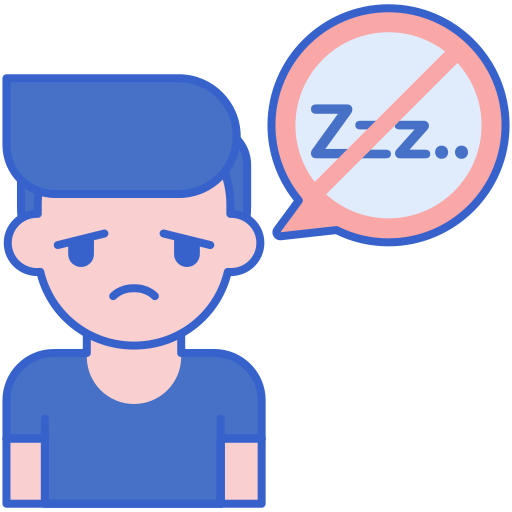
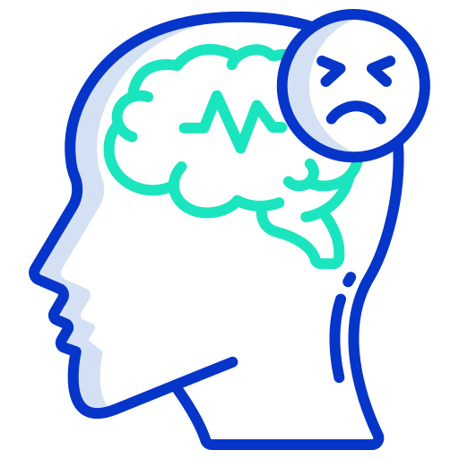

Malefícios causados pelo uso excessivo de telas
O uso das telas na vida contemporânea tornou-se algo cotidiano. Embora a tecnologia seja vantajosa em alguns aspectos, seu uso inadequado e excessivo pode causar diversos problemas na saúde mental de idosos, adultos, adolescentes e crianças. Veja a seguir alguns dos malefícios causados.
-

PROBLEMAS NA VISÃO
Uma das principais consequências do uso excessivo de telas é o surgimento de problemas relacionados à visão, devido à iluminação emitida pela tela do aparelho, além da possibilidade de os problemas oculares serem potencializados por fatores como a proximidade do aparelho em relação ao rosto e a quantidade de brilho definida.
-

IMPACTOS NO SONO
As telas causam insônia principalmente por emitirem luz azul, que inibe a produção de melatonina, dificultando o sono, e por estimularem o cérebro com conteúdo interativo, mantendo-o em estado de alerta. Isso atrapalha o relaxamento necessário para adormecer, tornando o sono mais difícil.
-
VÍCIO E DEPENDÊNCIA
O uso excessivo de telas, principalmente para jogos e redes sociais, pode levar à dependência digital, uma condição em que a pessoa se sente obrigada a usar o dispositivo constantemente, mesmo quando isso interfere em suas responsabilidades diárias, como trabalho, estudo ou convivência familiar.
-

PROBLEMAS FÍSICOS E MENTAIS
O uso excessivo de telas pode causar dores físicas, sedentarismo, e aumentar o risco de doenças crônicas. Também pode intensificar a ansiedade, depressão e isolamento, além de prejudicar a concentração e o desempenho cognitivo.